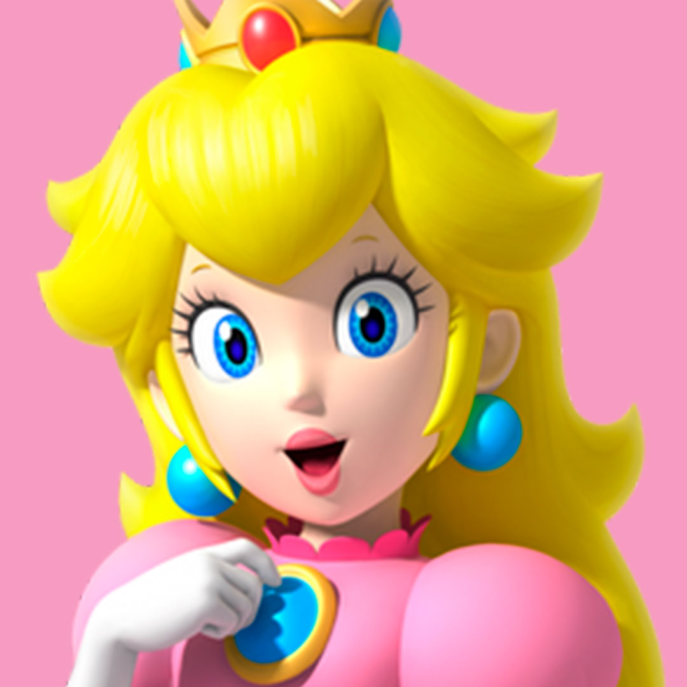
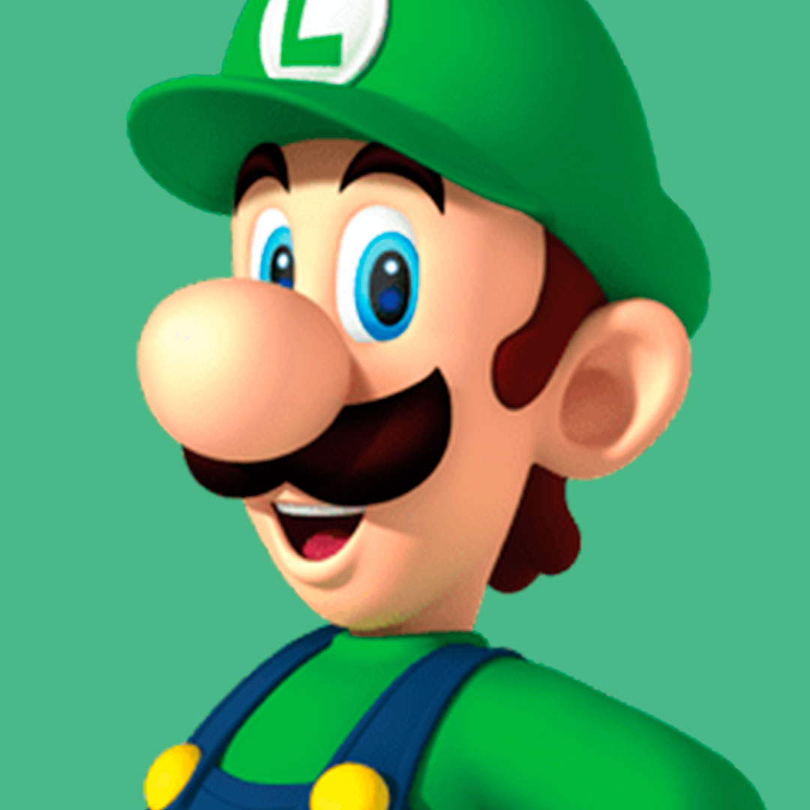

La película (The Super Mario Bros. Movie en inglés) Es una película animada CGI producia por Illumination en asociación con Nintendo y distribuida por Universal Pictures. Es la tercera adaptación cinematográfica de la franquicia de Mario de Nintendo, después de la película de anime japonesa de 1986, Super Mario Bros.: ¡La Gran Misión para Rescatar a la Princesa Peach! y la película de acción en vivo de 1993, Super Mario Bros.





Antes de su anuncio oficial, en 2017, surgieron los primeros reportes de que Nintendo se había aliado con Illumination para una película animada CGI de Mario. En septiembre de 2020, se anunció que la película avanzaba en su producción sin problema alguno. El rodaje de esta comenzó en 2020, en colaboración con Illumination. Alrededor de septiembre y octubre de 2021, se revelaron varias capturas de su primer anuncio oficial.
Esta será una aventura sin precedentes